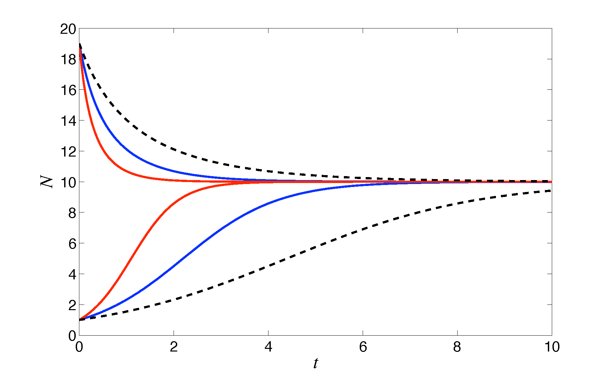
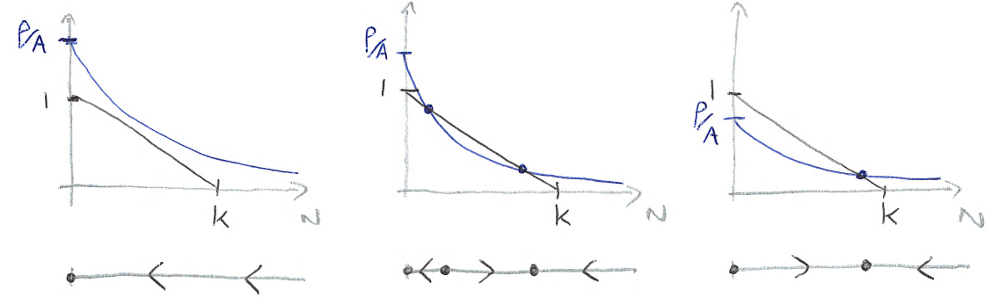

1 - Simple population models ¶
A first population model¶
In these first lectures we will think about populations as collections of individuals. For example, we may consider the human population of Sheffield, or the tapir population of South America, or the maize crop population of a field in Nigeria. Later we shall start considering perhaps less intuitive definitions of populations, such as of cells in the body, or proteins within cells. However, a key message to take from this module is that we can consider all of these biological populations in the same way from a modelling perspective, and subject to the same sorts of biological processes.
We might think we’d want to keep track of the number of individuals in a poulation as a key variable in any mdoel we make. However, as we will be using ordinary differential equations we need our variables to be continuous. We will therefore instead keep track of a population’s density and how this will vary over time. We might therefore call \(N(t)\) the density of individuals within our population at time \(t\), and try to write down an ordinary differential equation that describes its dynamics, such as,
An important modelling decision is what these terms on the right-hand side should look like, and this will depend on the specific biology. There are three main forms:
constant rate, \(\textrm{births}=B\). This would be suitable when new individuals appear in the environment at some constant rate, for example due to migration, or production of cells by the body.
per-capita rate, \(\textrm{births}=bN\). This would be suitable when each individual produces offspring at a certain rate, such that there are more offspring produced when the population is larger.
density-dependent rate, \(\textrm{births}=b(N)N\). This would be suitable if the per-capita rate is not fixed but instead varies with the population size, for example if high density means more competition for resources and thus lower growth. The form of this function will again depend on the biology.
For our basic model, per-capita rates for birth and death seem the most obvious choice. Our model is thus,
where the parameter \(r=b-d\) is the growth rate of our population.
Have a go
Either by separation of variables or integrating factors show that,
which predicts exponential growth of the population for \(r>0\) and exponential decline for \(r<0\).
Limits to population growth: The logistic equation¶
Here we have shown that, provided births are higher than deaths, our population will continue growing to infinity. What we failed to take into account in our model is that as the population grows the environment will become limiting in some way (for example, individuals need space and nutrients, which are both consumed by the growing population). So while our assumptions may hold at low population densities, they will break down at higher population densities. Our simple model has shown us that we need to take this into consideration if we are to understand population dynamics.
Given the above, choosing a density-dependent growth rate is an obvious extension. An intuitive way to set a limit on population growth is to assume that there is a fixed carrying capacity for the population, for example due to the available space or nutrients. We can then assume that as the population approaches this carrying capacity, the overall growth rate tends to zero. The simplest implementation of this is to assume that \(r\) decreases linearly with \(N\):
where \(r_0\) (the basic reproductive rate) and \(K\) (the carrying capacity) are positive constants. Our population equation is then
This equation is known as the logistic growth equation and is an example of intra-specific competition.
A useful step: non-dimensionalisation¶
Before continuing with our analysis we shall apply the useful technique of non-dimensionalising our model. This can both reduce the number of parameters and give us insight in to the scales at which biological processes operate. The technique involves combining variables and/or parameters from the model in biologically and mathematically helpful ways. For example, a natural scale for the population level is \(K\), so we can define the non-dimensional population variable \(n=N/K\). The equation then becomes
We can also note that a natural time scale for the dynamics is \(1/r_0\), such that we can take a new time variable, \(\tau = r_0t\), and the final non-dimensional model equation is
As you can see, by using two simple substitutions we have arrived at a very simple equation.
This equation is one of the few you will see in this module that yields an explicit solution:
where \(n_0\) is the initial population value. Examples of the dimensional solution for different values of \(r_0\) are shown in the figure.
Figure: example time-courses of the logistic model, with \(K=10\) and different values of \(r_0\) and initial conditions.
However, we can also gain a good deal of qualitative information about this model directly from the equation. Specifically, we can see:
for \(0<n<1\), \(dn/d\tau>0\)
for \(n>1\), \(dn/d\tau<0\)
(note that it makes no biological sense to worry about \(n<0\)). There are two values of \(n\) for which \(dn/d\tau=0\), at \(n=0\) and \(n=1\), which are the equilibria of the system. Therefore for any starting value of \(n>0\) the population should move towards a final state of \(n=1\), suggesting that the equilibrium at \(n=0\) is unstable and the equilibrium at \(n=1\) is stable. We can think about this more by sketching the curve \(dn/d\tau\) vs \(n\).
Have a go: Sketch the curve \(dn/d\tau\) vs \(n\) and use it to identify the key aspects of the system.
We can easily mark our equilibria at \(n=0\) and \(n=1\) and then consider the shape of \(dn/d\tau\), which we can see is a quadratic. (We can also mark on the qualitative direction of trajectories on the x-axis, giving a phase line.) Considering the gradients of this curve at the two equilibria, we can see that these give us a good description of their local stability. In particular if we take \(dn/d\tau=f(n)\), then if \(df/dn<0\) at an equilibrium then it is stable, and if \(df/dn>0\) at an equilibrium then it is unstable. This is known as {\em linearisation} around the equilibria. Notice, then, that we have fully described the possible behaviours of this system without having to explicitly solve the equation.
Case study: spruce budworm¶
Spruce budworm is an insect that lives in spruce and fir forests in the USA and Canada. While they mostly exist at low numbers, there are periodic explosions of budworms that devestate the forests. A particular feature of budworm dynamics is that they are predated by birds. We might then describe the dynamcis of budworm by the following equation,
where \(p(N)\) describes the rate of predation (note that we do not explicitly consider the bird population dynamics). What should \(p(N)\) look like? Should it be constant, a fixed per-capita rate, or some other density-dependent fucntion? First, we might reasonably assume that as more food becomes available, the more the birds will eat, so predation should increase with budworm density. However, we should also note that birds cannot eat an infinite amount, and that the rate of predation should therefore saturate at high budworm densities. We might then give an explicit model as,
What are the possible outcomes of this model? We might start by finding equilibria as before, but we will quickly find ourselves bogged down with tedious algebra. Instead, let’s use curve-sketching to explore the possible outcomes. The above model can be written as,
where \(r(N)=r_0(1-N/K)\) and \(p(N)=\rho/(N+A)\). We know that an equilibrium occurs where \(r(N)-p(N)=0\), which will be when the two curves cross. There are three cases to consider:
Figure: Sketches of \(r(N)\) and \(p(N)\) to assess stability of spruce budworm model for three different cases.
In case (1), where predation by the birds is very high, the two curves never cross, and \(dN/dt<0\) for all \(N>0\). Therefore the insect population is expected to be wiped out, with \(N=0\) the stable equilibrium. In case (2), where predation has weakened somewhat, two new equilibria appear, one stable and one unstable. We now have bistability - where two different equilibria are stable, but which one we go to depends on the initial conditions. In case (3) where predation is very weak, we now only have one equilibrium for \(N>0\), at high budworm densities. We also see now that \(N=0\) is no longer stable, and the budworm population will always reach this high equilibrium density.
What do these results tell us? That pest outbreaks such as the spruce budworm are likely to be driven by the pressure from predation. We can also see that, due to the bistability, sudden outbreaks can occur if there are relatively small changes to the environment.
Have a go
Use the budworm model python code to explore the model. Start with a high value of \(\rho\) and gradually reduce the value to see how the behaviour changes. You can then alter other model parameters if you wish.
3 key points¶
Parameters in model represent rates of change, and their functional form implies how that process works.
The logistic equation goes to a long-term equilibrium, and we do not need to explicitly solve it to understand its key behaviours.
Sudden outbreaks of spruce budworm can occur if there is a small change in the level of predation.